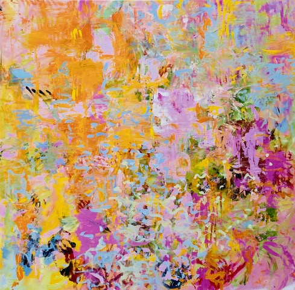

Sacred Places
Sacred Places at Bernard Gallery showcases four women artists of the Calumet Region, who have transformed personal challenges into powerful creative expression. Through their artwork, Nancy Natow-Cassidy, Kerri Mommer, Cara Schmitt, and Andrea Williams have found renewed connection, balance, and joy. Curated by Dawn Diamantopoulos, this upcoming exhibit will honor their journeys and celebrate the strength and resilience of women through art.